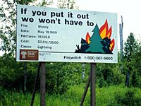

Prediction
Prescribed Burns
Insects & Disease
Technology
There are many ways a forest can be damaged, both in its natural state and in assisted regrowth areas. The forest can succumb to many natural and human disasters, and many of these can be restricted to small areas if action is taken early enough. The greatest threats to any forest are insect infestation, disease and, especially, fire. Forest protection is, therefore, a key element of forest management. |

Each year, thousands of hectares of productive forest are lost to forest fires. In some years, more trees are burned than harvested. Fires not only destroy productive forests, but are expensive to put out. This is why every effort is made to detect fires early and put them out quickly. |
Fire has an enormous impact on Saskatchewan's forest resources. The impact of fire is both positive and negative. Fire is a natural part of the renewal of forest ecosystems and is beneficial to the control of disease and insects, and the new growth that emerges following a fire also creates important habitat for wildlife. |
When commercial timber is lost to fire, however, the loss puts added pressure on remaining timber resources. Forest fires are currently the greatest cause of depletion, both in area and volume. |
 In 1989, a particularly bad fire season, there were 1020 fires that consumed over 470 000 hectares of forest. These fires caused the provincial government to pay over $42 million in control costs alone. The fire season of 1998 may exceed these figures substantially. An average of 940 fires annually consume approximately 215 000 hectares of forest, of which 35 percent is productive timber land. Fires burn, on average, more than 3.8 times the area of productive forest harvested each year. |